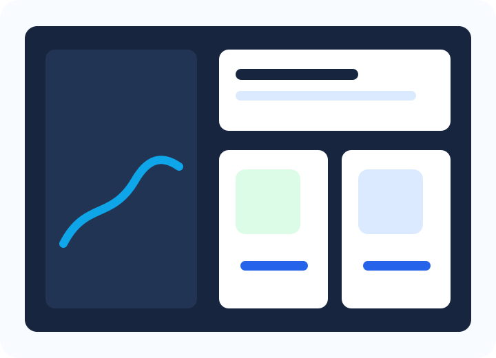
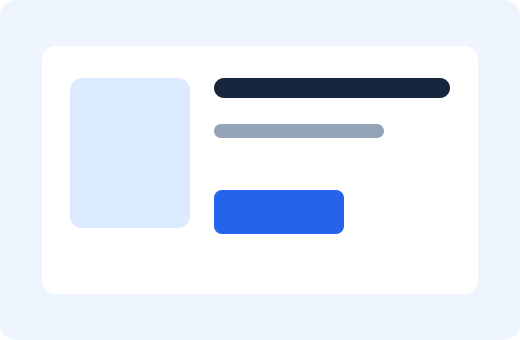
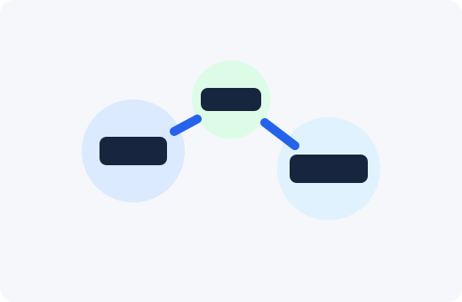

Website Design and Development
Custom WordPress builds, redesigns, landing pages, and conversion-focused content structures.
Premium WordPress systems for busy business owners
Nolan Digital Studio builds, repairs, maintains, and improves WordPress websites for service businesses, shops, and teams that need dependable digital infrastructure without technical confusion.

What we do
Custom WordPress builds, redesigns, landing pages, and conversion-focused content structures.
Updates, backups, monitoring, small changes, and clear monthly care for existing websites.
Broken layouts, plugin conflicts, speed issues, Core Web Vitals, and checkout problems handled carefully.
Store setup, product flow improvements, checkout cleanup, analytics, and operational integrations.
Technical SEO basics, tracking setup, conversion events, reporting hygiene, and search-ready pages.
Chatbot setup, content workflows, automation, and integrations offered as business services only.
Process
Selected work

WooCommerce cleanup, faster product browsing, simplified checkout, and analytics events for campaigns.
Modern pages, better quote paths, service-area content, and maintenance plan after launch.

CRM-ready forms, chatbot handoff planning, business workflow routing, and reporting foundations.
They translated our scattered website wishlist into a clear plan, fixed the painful issues first, and gave us a site our team can actually use.
Operations Director, regional services company
The maintenance plan removed a lot of stress. Updates, speed, tracking, and small improvements are handled before they become emergencies.
Founder, growing ecommerce brand
FAQ
Yes. We build classic WordPress themes, redesign existing websites, and improve sites already running on WordPress.
Yes. We start with an audit so fixes are prioritized by business impact and technical risk.
This preview presents AI chatbot and automation services as offerings only. It does not include API keys, paid services, or live AI integrations.